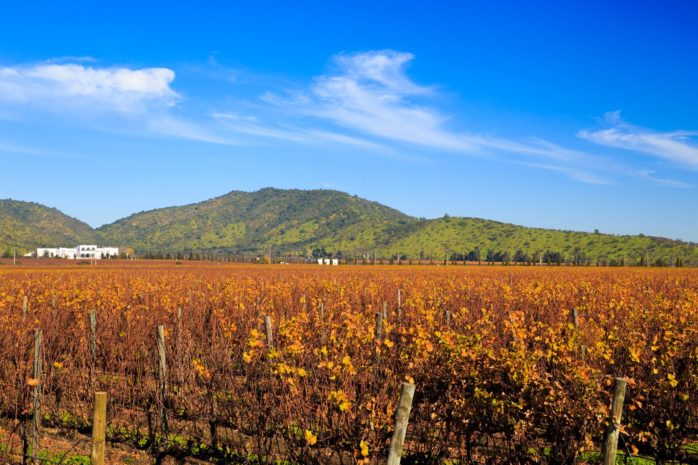

Consulta alternativas locales
Pregunta por servicios de taxi, transporte compartido o traslados privados disponibles para tu destino.

Descubre cómo llegar a Casablanca y Quintay desde Santiago o Valparaíso, y encuentra la alternativa de transporte que mejor se adapte a tu viaje.
Planificar recorridoCasablanca se encuentra junto a la Ruta 68, entre Santiago y Valparaíso. Desde la comuna también puedes continuar hacia Quintay, una localidad costera conectada por caminos interiores.
A continuación encontrarás orientaciones para llegar en vehículo particular y alternativas de transporte público. Recuerda verificar los servicios disponibles antes de iniciar tu viaje.
Elige desde dónde sales, cuál será tu destino y cómo prefieres viajar. Te mostraremos las orientaciones disponibles para tu recorrido.
Orientaciones para viajar desde Valparaíso hasta Casablanca.
Las indicaciones son orientativas. Antes de viajar, confirma los recorridos, horarios, tarifas, puntos de salida y disponibilidad directamente con los operadores correspondientes.
Si llegas a Casablanca y quieres visitar Quintay, las viñas u otros sectores rurales, organiza con anticipación los traslados entre localidades.
La disponibilidad de transporte local puede variar según el día, la temporada y el sector que quieras visitar.
Pregunta por servicios de taxi, transporte compartido o traslados privados disponibles para tu destino.
Antes de salir, confirma cómo y a qué hora podrás regresar a Casablanca o a tu ciudad de origen.
Algunas experiencias turísticas requieren reserva previa y pueden encontrarse alejadas del centro urbano.
Revisa sus canales de información antes de viajar. Los recorridos, horarios, tarifas y disponibilidad pueden cambiar.
Publica recorridos entre Valparaíso y San Antonio que incluyen Casablanca en determinados trazados.
Ver rutas Contacto y oficinasConsulta directamente por sus servicios hacia Quintay, puntos de salida y horarios disponibles.
Consultar informaciónConsulta servicios entre Santiago y la Región de Valparaíso. Confirma si existe una parada habilitada en Casablanca para el servicio que deseas utilizar.
Visitar sitio oficial01 Confirma horarios, tarifas y disponibilidad.
02 Revisa el punto exacto de salida y llegada.
03 Considera los traslados entre atractivos.
04 Guarda información del viaje de regreso.
05 Revisa el estado de las rutas y el tránsito.
06 Si visitas viñas, planifica un regreso seguro.
La información de esta página es orientativa. Los servicios de transporte pueden cambiar y deben confirmarse directamente con sus operadores antes de viajar.
Descubre Quintay y conoce otra cara de la comuna de Casablanca.
Explorar Quintay